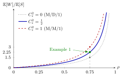

Pollaczek-Khinchine Formula¶
Theorem¶
Consider the M/G/1 queue: jobs arrive as a Poisson process with rate , service times are i.i.d. copies of with , there is one server that serves in order of arrival, and the load satisfies . Then the mean waiting time in queue is (Theorem 5.4.2)
where is the squared coefficient of variation of the service time.
Interpretation¶
The formula splits the mean waiting time into three factors: the variability of the service times, ; a load factor, ; and the time scale, . Each factor points to a different way to reduce waiting: make services more regular, reduce the load, or make services shorter.

The figure plots for the M/D/1 queue (), for and for the M/M/1 queue (). All three curves are convex and explode as , so is not linear in (TF 5.4.3). The marked point is the workstation of Example 1: and give hours. At a fixed load, the M/D/1 curve is exactly half the M/M/1 curve.
The derivation shows why each condition is there. An arriving job first waits for the remaining service time of the job in service and then for the jobs in queue. Poisson arrivals give, by PASTA, ; Little's law replaces by , so , which needs ; and needs the finite second moment. For non-Poisson arrivals PASTA fails, and the formula need not hold.
The M/M/1 waiting time from Week 4 is the case . The batch-arrival waiting time has the same structure, with the variability of the batch size in place of . A common slip is to think that only matters: two machines with the same mean service time and load can have very different queues. In Week 6, Sakasegawa's formula extends this structure to queues with general arrivals and several servers.
Key Results¶
- Derivation (5.4.1). , so , and Theorem 5.4.1 gives . Both PASTA and Little's law are used (TF 5.4.5).
- Second form. turns the first expression into the second.
- Deterministic service (TF 5.4.2, Exercise 5.4.7). For M/D/1, and , half the M/M/1 value at the same load.
- Other measures. for the sojourn time, and .
- Other derivations. The notes also obtain the formula from the level-crossing integral equation (4.6.12) for the waiting-time density, and as the limit of the waiting time when each job is cut into many tiny exponential items; both are marked as skippable.
Examples¶
1. A workstation (Exercise 5.4.6). Jobs arrive at per day of hours, so per hour, with hours and . Then and
To bring down to hours, removing all variability is not enough: still gives hours. The load must come down as well. For instance, hour with gives and hours.
2. Uniform service times (Exercise 5.4.8). Let hours and per hour. Then , , and . Both forms agree: and hour. The mean sojourn time is hours.
3. The load is not linear. For an M/M/1 queue with minute, raising the load from to raises from to minutes. A increase in load more than doubles the waiting time, while the same increase from to moves only from to minute.
Prerequisites¶
- Remaining Service Time
- Little's Law
- Poisson Arrivals See Time Averages
- Squared Coefficient of Variation
- Waiting Time
Related Concepts¶
- M/M/1 Queue
- Batch-Arrival Waiting Time
- M/G/1 Departure-Epoch Chain
- Sakasegawa's Formula
- Sojourn Time
- Kendall's Notation
- Level-Crossing Equation
- N-Policy
Sources¶
- Stochastic Operations Research · Week 5
- N. D. van Foreest, Sample Path Analysis and Simulation of Stochastic Systems, Section 5.4
Aliases: PK formula, P-K formula, Pollaczek-Khintchine formula, Pollaczek–Khinchine mean value formula, M/G/1 mean waiting time, M/G/1 waiting-time formula Keywords: \mathbb{E}[W]=\frac{\lambda\mathbb{E}[S^2]}{2(1-\rho)}, \frac{1+C_s^2}{2}\frac{\rho}{1-\rho}\mathbb{E}[S], C_s^2, M/D/1 queue, service-time variability, mean waiting time in queue Symbols: infinity, lambda, rho
Last updated: 29 October 2026 20:42
Pollaczek-Khinchine FormulaN-PolicySakasegawa's FormulaRemaining Service TimeLittle's LawPoisson Arrivals See Time AveragesSquared Coefficient of VariationWaiting TimeM/M/1 QueueBatch-Arrival Waiting TimeM/G/1 Departure-Epoch ChainSojourn TimeKendall's NotationLevel-Crossing Equation